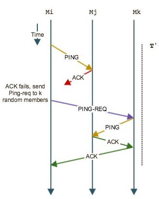
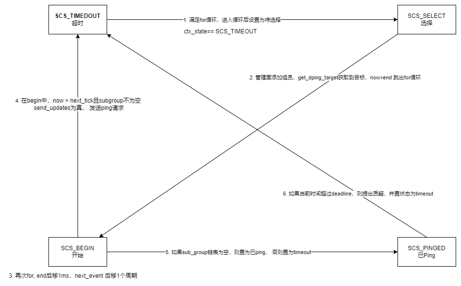
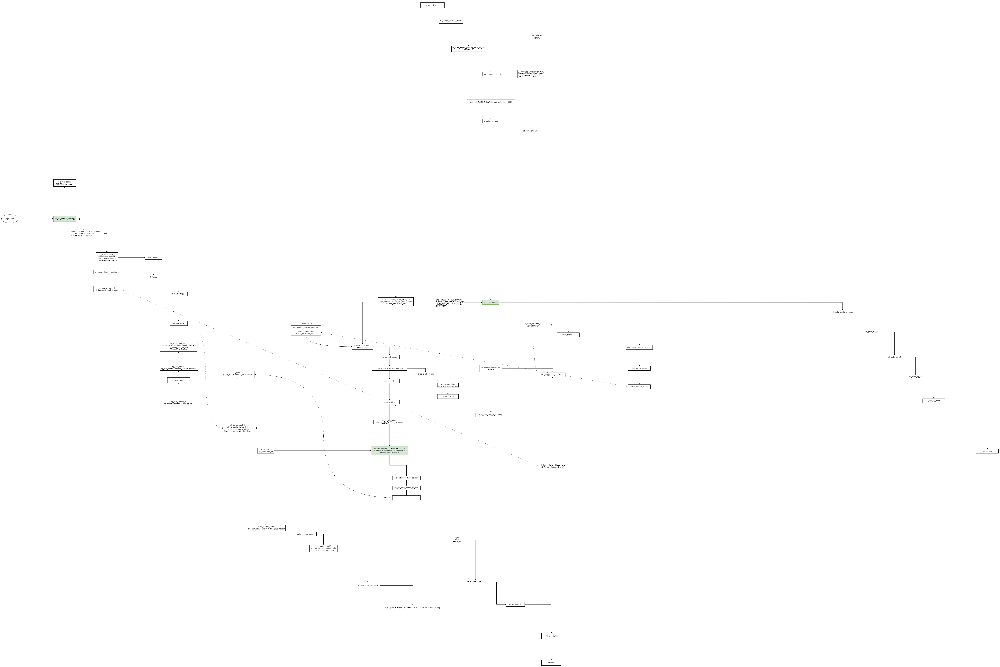
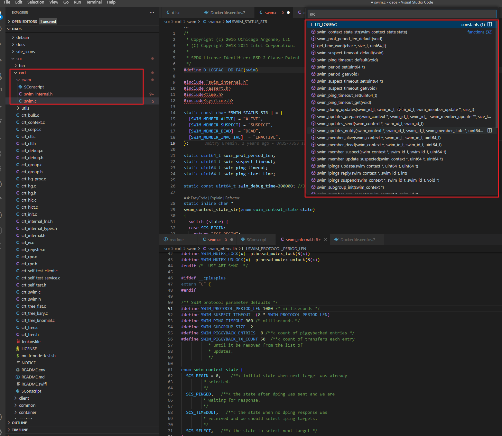

DAOS引擎心跳健康检测-cart_swim(可扩展的弱一致性感染式过程组成员协议)
DAOS引擎心跳健康检测-cart_swim(可扩展的弱一致性-感染式过程-组成员协议)
术语
swim: Scalable Weakly-consistent Infection-style process group Membership Protocol, 可扩展的弱一致性-感染式过程-组成员协议
round-trip: 往返
简介
SWIM是DAOS引擎(rank)间的网络健康检测机制, 属于通信组件cart下的代码模块, SWIM是通过Gossip实现的Membership保持协议，也就是维护分布式系统节点的状态
DAOS 引擎在系统内通过称为 SWIM 的基于 gossip 的协议进行监控，该协议提供准确、高效和可扩展的故障检测。附加到每个 DAOS 目标的存储通过定期本地健康评估进行监控。每当本地存储 I/O 错误返回到 DAOS 服务器时，将自动调用内部健康检查过程。此过程将通过分析 IO 错误代码和设备 SMART/Health 数据来进行整体健康评估。如果结果是否定的，目标将被标记为有故障，并且此目标的进一步 I/O 将被拒绝并重新路由
特点:
- 可伸缩性
- 弱一致性
- 感染性
SWIM 是一个成员协议，它帮助我们知道那些结点在集群中，帮助我们维护一个不断更新的健康结点列表
它将成员问题分成两个部分：失效检测 和 信息传播
失效检测 随机地向结点发送 ping 消息，并期待收到 ack 消息；如果没有收到 ack ，将向 k 个结点发送 ping-req 消息，借助他们来间接的进行探测。
失效检测 的一个优化是，首先是标记结点“有嫌疑”，在超时后再标记为“挂了”。
对于 信息传播 的优化是，让失效检测消息（ ping、ping-req 和 ack）捎带上 成员变化 信息，而不是使用 IP广播 机制。
对于失效检测时间的优化是，采用轮流（round-robin）选择结点的方式，而不是随机选择。
因此，SWIM 协议具备如下优势：
可伸缩性：失效发现时间、误报率以及每个成员所需的消息收发负载与集群大小无关。成员状态变更信息的传播与集群大小呈对数关系（log n）
健壮性：协议是完全区中心化的，对于结点故障或网络分区具有容错能力。
易于部署和维护：新成员联络任何一个现有成员即可加入集群；而成员离开时，无需任何特别措施即可维持集群健康。
实现的简单性：协议中只定义了为数不多的状态和消息类型。而且点对点的结构，无需进行初始配置或在成员变更时进行维护。
成员协议, ping, ping-req, ack等捎带成员更新消息, 失效检测: 探测间隔 * 结点数
几个分布式对等应用程序需要所有参与进程的进程组成员信息的弱一致知识。SWIM 是一个通用软件模块，为大型流程组提供此服务。SWIM 努力的动机是传统心跳协议的不可扩展性，这些协议要么施加随组大小二次增长的网络负载，要么在检测过程崩溃时牺牲响应时间或误报频率。本文报告了 SWIM 子系统在大型商用 PC 集群上的设计、实施和性能。与传统的心跳协议不同，SWIM 将成员协议的故障检测和成员更新分发功能分开。通过有效的对等定期随机探测协议监控流程。首次检测到每个进程故障的预期时间和每个成员的预期消息负载都不会随组大小而变化。有关成员资格更改的信息，例如进程加入、退出和失败，通过 ping 消息和确认的捎带传播。这导致了强大而快速的感染方式（也是流行或八卦方式）的传播。通过修改协议以允许组成员在将进程声明为失败之前对其进行怀疑，从而降低了 SWIM 系统中的错误故障检测率——这允许系统发现并纠正错误的故障检测。最后，该协议保证了检测故障的确定性时间限制。展示了 SWIM 原型的实验结果。我们讨论了设计在 WAN 范围内的可扩展性
心跳:
传统的诸如heartbeats这种membership protocols，每个node周期性地向网络中的所有其他节点发送heartbeat来表示自己是alive的，如果peer超过指定interval没有收到node的heartbeart则该node被认定为dead。这种方式适用于小型网络，其发送的heartbeart数量为O(n^2)，当网络中有成千上万的node时则会造成巨大的网络负担；SWIM采用Infection-Style dissemination感染型传播来解决这个问题
假设您要求构建一个类似于Cassandra的分布式数据库。您的存储系统将存储和处理在大量商品服务器上运行的大量数据。换句话说，您的系统将依靠 100 多个节点的力量来管理数据。
在这个规模上，失败将是常态，而不是例外。即使我们假设一个节点持续 1000 天（大约 3 年），在 500 个节点的集群中，每 2 天就会出现一次故障。
为了处理这种情况，您需要一个故障检测服务，它除了检测故障节点外，还使所有非故障进程与处于活动状态的进程保持同步。在这篇博文中，我们将介绍一种称为 SWIM 的协议并了解其内部工作原理。
swim成员协议为组中的每个进程提供了一个本地维护的列表，称为成员列表，该列表包含组中的其他非故障进程。
因此，该协议执行两项重要任务 -
- 检测失败，即如何识别哪个进程失败以及
- 传播信息，即如何将这些故障通知系统中的其他进程。
不言而喻，成员协议在检测故障方面应该是可扩展的、可靠的和快速的。成员协议的可扩展性和效率主要由以下属性决定
- 完整性：每个失败的进程最终都会被检测到吗？
- 故障检测速度：故障与非故障进程检测到的平均时间间隔是多少？
- 准确性：流程被归类为失败的频率，实际上是非故障的（称为误报率）？
- 消息负载：每个节点产生多少网络负载，是否均匀分布？
理想情况下，人们会想要一个完全 100% 准确的协议，这意味着检测到每个错误的过程，没有误报。然而，与分布式系统中的其他权衡一样，存在一个不可能的结果，即无法通过异步网络保证 100% 的完整性和准确性。因此，大多数成员协议（包括 SWIM）以准确性换取完整性，并试图将误报率保持在尽可能低的水平。
SWIM 故障检测器
SWIM 故障检测器使用两个参数——一个协议周期T和一个整数k，它是故障检测子组的大小。

SWIM 故障检测
上图显示了协议的工作原理。在每个T时间单位之后，进程 M i从其成员列表中选择一个随机进程 - 比如说 M j - 并向它发送一个ping。然后它等待来自 M j的ack。如果在预先指定的超时时间内没有收到确认，M i通过随机选择目标间接探测 M j并使用它们向M j发送ping。然后，这些目标中的每一个都代表 M i向 M j发送一个ping ，并在收到一个ack时k``k通知 M i。如果由于某种原因，这些进程都没有收到ack，则 M i将 M j声明为失败并将更新移交给传播组件（如下所述）。
SWIM 与其他心跳/八卦协议之间的关键区别因素是 SWIM 如何使用其他目标到达 M j以避免在 M i和 M j之间的网络路径上出现任何拥塞。
SWIM 传播组件
传播组件只是将故障更新多播到组的其余部分。所有收到此消息的成员都将 M j从其本地成员列表中删除。关于新成员或自愿离开的信息以类似的方式被多播成员。新加入成员或自愿离开成员的信息以类似方式多播。
改进
感染式传播——在更健壮的 SWIM 版本中，传播组件不依赖于不可靠和低效的多播，而是在故障检测器协议发送的ping和ack消息上捎带成员资格更新。这种方法被称为感染式（因为这类似于八卦或人群中的流行病）的传播，其优点是具有较低的数据包丢失和更好的延迟。
怀疑机制- 尽管 SWIM 协议通过 pingk节点来防止两个节点之间出现拥塞的情况，但仍然有可能完全健康的进程 M j变得缓慢（高负载）或由于周围的网络分区而暂时不可用本身，因此被协议标记为失败。
每当基本 SWIM 检测到故障时，SWIM 通过运行称为 Suspicion 子协议的子协议来缓解这种情况。在该协议中，当 M i发现 M j没有响应（直接和间接）时，它将 M j标记为嫌疑人，而不是将其标记为失败。然后它使用传播组件将此消息 M j :发送suspect到其他节点（感染式）。任何后来发现 M j响应ping的进程都会取消标记怀疑并用 M j :alive消息感染系统。
有时间限制的完整性——基本的 SWIM 协议在平均恒定数量的协议周期内检测故障。虽然保证最终检测到每个故障进程，但由于目标节点的随机选择，在将 ping 发送到故障节点之前可能会有相当大的延迟。
SWIM 建议的一个简单改进是通过维护一组已知成员并以循环方式选择*ping目标。*数组完全遍历后，随机打乱，继续处理。这为同一目标的连续选择之间的时间单位提供了有限的上限。
结论
SWIM 协议已在许多分布式系统中使用。一个使用 SWIM 的流行开源系统是Serf，它是Hashicorp为集群成员提供的分散式解决方案。该文档对底层架构进行了相当清晰的演练。Hashicorp 的好心人也在Github上开源了他们的实现。对于那些通过阅读代码可以更好地理解的人，请务必检查一下。
最后，这篇博文特意保留了数学以使高级思想变得简单，但如果您有兴趣深入研究，请务必阅读本文以更好地了解误报率的上限、检测故障的平均时间和网络负载
流程图
状态机:

源码流程图

源码分析
版本: daos 2.0.1, 新版本对swim改动较大
swim使用tag1:
tag 0 is used by the metadata service handling pool and container operations. tag 1 is used for cross-server monitoring (SWIM). tags 2 to [#targets + 1] is used by DAOS targets (one tag per target]. tags [#targets + 2] to [#targets + #helpers + 1] is used by helper service threads.
源码位置:
src\include\cart\swim.h
src\cart\swim\swim.c

-
swim初始化中(swim_init(SWIM_ID_INVALID, &crt_swim_ops, NULL))添加rank成员, crt_swim_rank_add
-
在处理回调函数中执行状态机处理: crt_swim_progress_cb -> swim_progress, 发送PING包, 更新质疑状态, 更新PING状态等
-
每秒检测一次, 如果PING不通(900毫秒), 先提出质疑(8秒), 请第三方间接PING, 最后标记为DEAD状态
-
参考日志
swim_prot_period_len:1000,swim_suspect_timeout:8000,swim_ping_timeout:900,sc_next_tick_time:2037074
其他参考流程
故障流程 心跳 swim swim_progress
c -> s
kill s
swim ping timeout
swim suspect
swim suspect timeout
swim confirm dead swim_member_dead
notify dead swim_updates_notify -> crt_swim_notify_rank_state
group_map_update to leader
group_map update bcast
making Excluded
参考
IEEE: https://ieeexplore.ieee.org/document/1028914
论文: https://github.com/ssbandjl/distributed-computing/blob/master/dsn02-swim.pdf
swim增加状态: https://daosio.atlassian.net/browse/DAOS-11274, https://github.com/daos-stack/daos/pull/10435
添加新的状态机状态 SCS_IPINGED，用于等待间接 ping 截止时间
晓兵
博客: https://logread.cn | https://blog.csdn.net/ssbandjl
weixin: ssbandjl
公众号: 云原生云

- 原文作者：晓兵
- 原文链接：https://logread.cn/post/daos/daos_cart_swim/
- 版权声明：本作品采用知识共享署名-非商业性使用-禁止演绎 4.0 国际许可协议进行许可，非商业转载请注明出处（作者，原文链接），商业转载请联系作者获得授权。